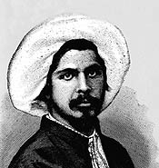

Ali Suavî

Yola ve uykusuzluða dayanýklý anlamýna gelen Suavî lakabýný kullanan Ali; ömrü boyunca hareketli, heyecanlý, doðru bildiðini her ne þekil ve pahasýna olursa olsun söylemekten hiçbir zaman vazgeçmeyen, yardýmlarýný gördüðü kiþilerin dahi hatalarýný dile getirmekten çekinmeyen, gerçekleþtirdiði hazin Çýraðan baskýnýyla tarihimize "Sarýklý Ýhtilalci" olarak geçen, sert eleþtirilerinden dolayý çok sayýda düþman kazanan, dinde hassas ve ittihad- ý Ýslamý samimiyetle savunan, anlaþýlmasý hiç de kolay olmayan bir hayat serüveninin kahramaný.. Kimilerine göre, olaðan üstü zeki, büyük alim, deðeri bilinmemiþ idealist, kahraman þehit; kimilerine göre, cahil, þarlatan, küçük adam, megalo manyak, maðrur, hain, ajan..Ali Suavî, 1255 yýlýnýn Ramazan Bayramýnda (8 Aralýk 1839) Ýstandul' da doðdu. Tahsil görmemesine karþýlýk; ilme ve ilim adamlarýna hürmetkar bir baba, eþine ders verecek kadar eðitimli bir annenin çocuðudur. Babasý yarý cahil olmasýna raðmen samimi bir müslümandý. Ali, Davutpaþa Ýskelesi Rüþtiye mektebini bitirdikten sonra memuriyet hayatýna atýldý. 17-18 yaþlarýnda hacca gitti. Hacca gittiði sýrada, alimlerle temasa geçerek hadis konusundu bilgisini arttýrmaya çalýþtý. Daha önceden Arapça ve Farsçayý öðrenmiþ olmasý bu yöndeki çalýþmalarýna katký yapmýþtýr.
Öðretmen açýðýný kapatmak maksadýyla yapýlan sýnavda büyük baþarý gösterince Bursa Rüþtiyesine muallim-i evvel olarak tayin edildi (1858). Ali, burada bir taraftan öðretmenlik yaparken diðer taraftan da Bursa Ulu Cami' de vaazlar vermeye baþladý. Batýlý tarzda açýlmýþ bulunan bir okulda görev yapmasýna raðmen sarýklýydý. Sadrazam Ali Paþanýn daveti üzerine 1861 yýlýnda Ýstanbul' a geldi. 1864' te Sofya Ticaret Mahkemesi reisliði, 1865-66 yýllarýnda Filibe tahrirat müdürlüðü yaptý. 1866 yýlýnda tekrar Ýstanbul' a gelerek Þehzade Cami'inde ders ve vaazlar vermeye baþladý. Namýk Kemal, onun burada verdiði vaazlardan övgüyle söz ederken, bir çok ileri gelenin vaazlarýna gelmiþ bulunmasý, önemli bir þöhrete sahip olduðunu göstermektedir.
1867 yýlýnda Muhbir Gazetesindeki yazýlarýyla gazeteciðe ilk adýmýný attý. Gazetenin kapatýlmasýndan sonra Kastamonu' ya sürüldü (1867). Mustafa Fazýl Paþanýn daveti üzerine ayný yýl Paris' e kaçtý. Sultan Abdülaziz' in Fransa' ya yapacaðý ziyaret üzerine ancak bir ay kalabildikleri Paris' ten arkadaþlarýyla birlikte Londra' ya geçti. Burada Osmanlý devleti lehinde çalýþmalar yaparak özellikle Ýslama yönelik yalan yanlýþ fikirlere karþý, çevresindeki önemli Ýngilizleri aydýnlatmaya çalýþtý. Doðunun geri kalmýþlýðýnýn sebebinin, Ýslam dini olmadýðýný, idarecilerin yanlýþ yönetimlerinin sonucu olduðunu izah etmeye çalýþtý. Ayný zamanda yabancýlarýn haksýz müdahalelerini de eleþtirdi. Yurda dönüþ için müracaat etmesi üzerine Sultan Abdülhamid tarafýndan kendisine izin verilince, 9 yýl 5 ay sonra Ýstanbul' a döndü (1876).
Padiþahýn emriyle 1 Þubat 1877' de Galatasaray Lisesi müdürlüðüne atandý. Göreve baþladýðý gibi; öðrenci, öðretmen, görevli sayýsýný Müslümanlar lehine dönüþtürmesi, programda olmasýna raðmen okutulmayan dini dersleri okutmaya çalýþmasý, burayý tahakkümleri altýnda bulunduran baþta Fransa olmak üzere, Ýngiltere ve Osmanlý vatandaþý gayrý müslimlerin tepkisine sebep oldu. Bir yýlý dahi dolmadan görevden alýndý (1878).
Ali Suavî, V. Murad' ý tahta geçirmek maksadýyla, birkaç yüz muhacirle gerçekleþtirdiði Çýraðan baskýný sýrasýnda, Beþiktaþ Zabýta Amiri Hasan Paþa' nýn kafasýna vurduðu sopa darbesiyle hayatýný kaybetti (20 Mayýs 1878).
Ali Suavî' nin hayat seyri, onun çok hýrslý bir kiþiliðe sahip olduðunu göstermektedir. Bu hýrsýný ilim tahsilinde de kullanmasý, zeki ve çok kuvvetli bir hafýzaya sahip olmasý, daha çok genç yaþta iken meþhur olmasýný netice verdi. Dinden aldýðý terbiye gereði, haksýzlýk ve adaletsizlikle sürekli olarak mücadele etti.
Ali Suavî, Tanzimat Fermanýnýn yayýnlandýðý yýl doðdu ve Kýrým Savaþý, Islahat Fermaný, Meþrutiyetin ilan edilmesi gibi çok önemli hadiselerin yaþandýðý bir asýrda yaþadý.
Diðer Osmanlý aydýnlarý gibi; devletin bekasý, gerilemenin sebepleri ve terakki için yapýlmasý gerekenler üzerinde kafa yorarken, bunlarý kamuoyuna da duyurdu. Fikirlerini açýk bir þekilde dile getirdiði yazýlar ve vaazlar yoluyla düþündüklerini yaymaya çalýþtý.
Ali Suavî yazýlarýnda eðitime önemli ölçüde aðýrlýk vermiþtir. Ona göre, eðitilmiþ ve hukukunu bilen toplumlar yýkýlmazlar. Fen ilimleriyle din ilimlerinin beraber okutulmasýndan yanadýr. Eðitimde demokrasi ve eþitliði savunarak bunlarý "nezih ortamlarda þakýyan bülbüle" benzetir.
Yeni Osmanlýlara, Paris' e kaçtýðý sýralarda katýlan Ali Suavî, Avrupa' daki fikir akýmlarýný takib etme þansýný bulmuþtur. Ancak siyasi ve sosyal sýkýntýlara çare ararken, daima Ýslamiyeti referans olarak almýþtýr. Meþrutiyet ve meþveret konularýný ele alýrken Ýslami esaslarda mevcut olan "usul-u meþveret"i temel almýþtýr. Meþveret esasýndan yola çýkarak, keyfi idareye karþý çýkmýþtýr. Dahilde meþveret esasýna uyulmamýþ olmasýnýn, devleti ve milleti kötü duruma düþürdüðü inancýný ifade etmiþtir.
Meþveret usulünün uygulandýðý en iyi yerin meclis olduðunu dile getirerek, meclisin açýlmasýndan yana tavýr alýr. Ona göre meclisin varlýðý devlet ve millet için elzemdir. Aksi takdirde idareciler hakim, vatandaþlar ise mahkum olur.
Üzerinde önemle durduðu konulardan birisi de hürriyettir. Bir insanýn baþka bir insana tahakküm etmesine karþýdýr. Büyük bir medeniyeti tesis etmiþ bulunan müslümanlarýn, her milletten daha çok meþrutiyete layýk olduklarý inancýný taþýr. Meþrutiyete geçmenin Avrupa kanunlarýný kabul etmek anlamýna gelmediðini, dört halife zamanýnda yapýlmýþ bulunan bazý uygulamalarla delillendirir. Demokrasiyi savunan Ali Suavî, Ýslamiyetin ilk yýllarýndaki uygulamalardan olan, ümmetin onayýna müracaat sisteminde hükümet þeklinin padiþahlýk, sultanlýk olmadýðýný, eþitliðin varolduðunu dile getirir. Sahabelerin doðrudan doðruya yönetime katýldýklarýný belirtir.
Genel olarak Ali Suavî; Osmanlýcý, milli deðerleri müdafaa eden, batýcý zihniyete karþý ittihad-ý Ýslamcý olup hayatý boyunca bu ideallere baðlý kalmýþtýr.
Bediüzzaman Said Nursi ve Ali Suavi
Bediüzzaman hazretleri, ittihad-ý Ýslam fikrini dile getirirken bu konuda selefleri arasýnda saydýðý Ali Suavî' yi "müfrit alimler" den sayar. Dolayýsýyla Ali Suavî' nin ittihad-ý Ýslama olan samimiyetine vurgu yapýlýrken bir bakýma da ifrata varan tutum ve davranýþlarýnýn da gözden uzak tutulmamasý gerekir. Ýslamî konularda zaman zaman bir müçtehid gibi fetva vermesi de, tartýþma ve eleþtiri konusu olmuþtur.
"Senin üzerine haktýr ki, her söylediðin hak olsun. Fakat her hakký söylemeye senin hakkýn yoktur. Her dediðin doðru olmalý; fakat her doðruyu demek doðru deðildir" (Mektubat) düsturuna Ali Suavî' nin riayet etmemiþ olmasý, parlak giden hayat seyrinin, kýsa zamanda ve genç yaþta sönmesine sebep olmuþtur. Özellikle Galatasaray Lisesi Müdürlüðü sýrasýnda yapmak istediði deðiþikliklerdeki zamanlama ve tavýr hatasý, vaazlarý ve makalelerinde kullandýðý sert üslub, daha çok düþman edinmesine sebep olmuþtur. Görevden alýndýktan hemen sonra, onu savunan bir çok kiþi aleyhine geçmiþtir. Ancak, Sultan II. Abdülhamid'in, Ali Suavî' yi göreve tayin kararýný sadece bir gün bekletmiþken, azil kararýný 34 gün sonra onaylamasý da dikkat çekicidir.
Hislerinin ön planda olmasý ve ani kararlar vermesi, sonunun hazýrlanmasýnda etkili rol oynamýþ, giriþtiði ihtilal teþebbüsü de, kendisi baþta olmak üzere bir çok insanýn ölümüne yol açmýþtýr.
Eserleri
Ali Suavî, otuz dokuz yýllýk bir ömür sürmesine raðmen, hiç de az sayýlmayacak eser býrakmýþtýr.Kitap ve risaleleri:
1- Ehemmiyet-i Hýfz-ý Mal, Filibe 1865
2- Santorin Risalesi, Filibe 1866
3- Hukuku'þ-Þevari, Ýstanbul 1908
4- Defter-i Amal-ý Ali Paþa, Paris 1871
5- Türkiye Fi 1288, Paris 1871 (yýllýk)
6- Mýsýr Fi 1288, Paris 1873 (yýllýk)
7- Türkiye Fi 1290, Paris 1873 (yýllýk)
8- Hive Fi Muharrem1290, Paris 1873
9- Nasreddin Þah, Paris 1873. (Hüseyin Çelik, Ali Suavî ve Dönemi, 467-545)
Bunlarýn dýþýnda Türkçe ve yabancý dillerde yazýlmýþ çok sayýda kitap, risale, makale ve tercümeleri bulunmaktadýr. Diðer yandan bazý eserlere de ilaveler yapmak suretiyle tekrar basmýþtýr.